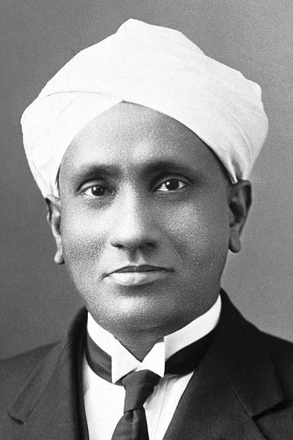
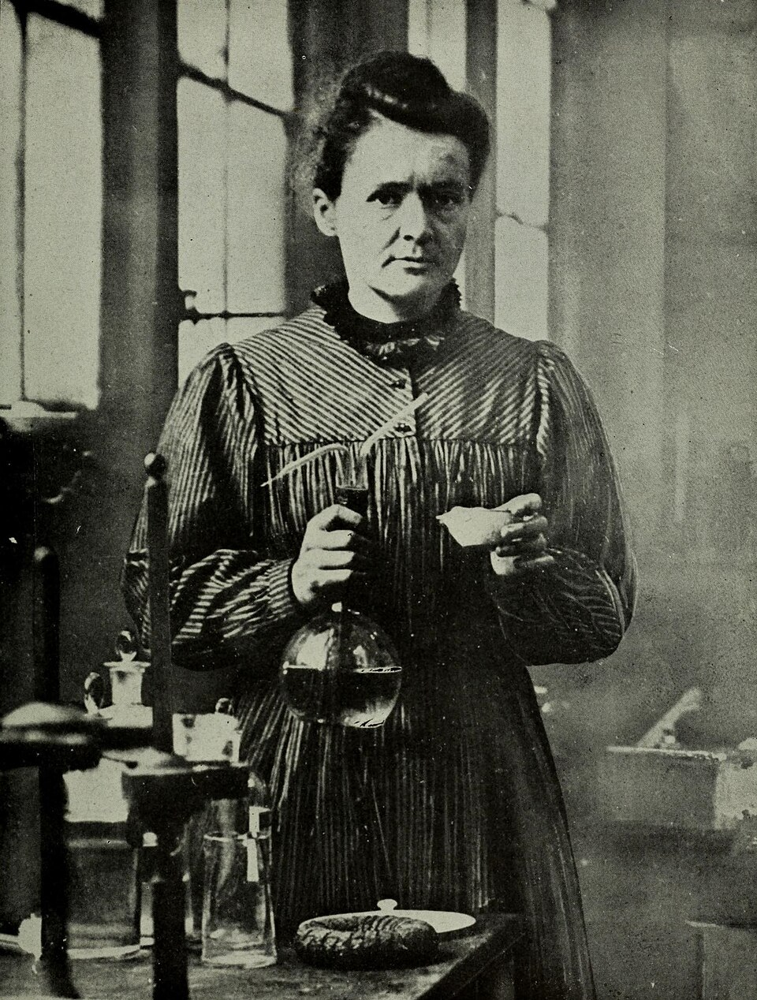
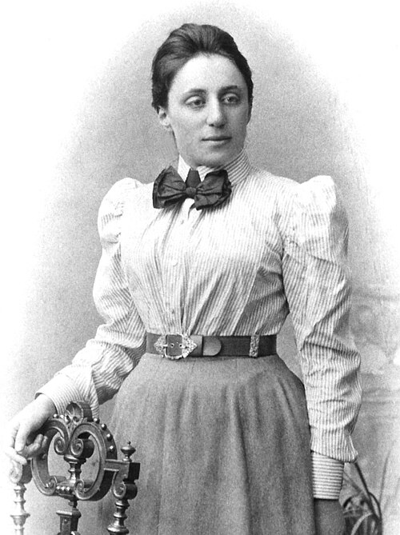
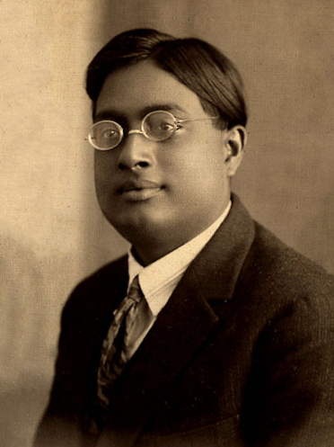

Intelligent Behavior
Intelligent Behavior
Curious students thrive around people who think deeply.
Tangent is a small-group program where curious students read powerful texts and discuss big ideas with expert mentors.
For students in grades 7-12
3-4 students per group. Online. English-preferred.
3-4 students per group. Online. English-preferred.
Intelligent Behavior
 Mathematics
Mathematics
Why Tangent?
Many exceptional thinkers were shaped early by some mix of hard books, thoughtful adults, and intellectual homes that took their questions seriously.
Tangent creates a small, structured version of that environment for more students.

C. V. Raman
Marie Curie
Emmy Noether
Satyendra Nath BoseWhat students would do
Read deeply
Short, powerful texts by major thinkers.
Discuss freely
Small groups where questions matter.
Think independently
Students learn to form, test, and revise their own ideas.
For whom?
For the student who keeps asking why.
For students in Grades 7-12, especially those who ask "why?", enjoy big ideas, or want more than school usually has room for.
Tangent is not tuition or test prep. It is a place for students who want room to think.